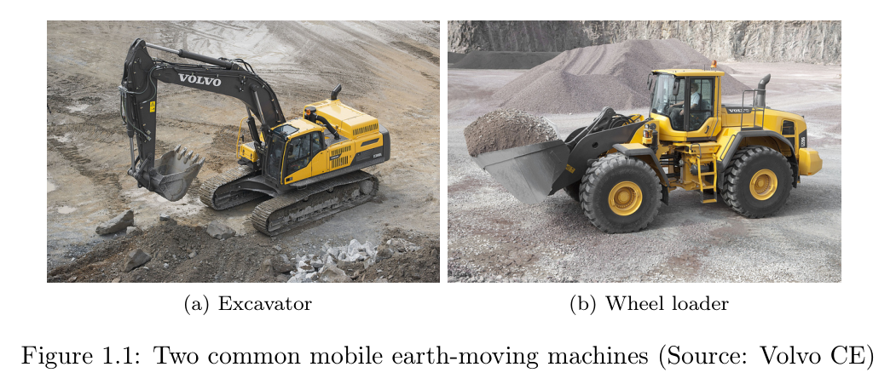
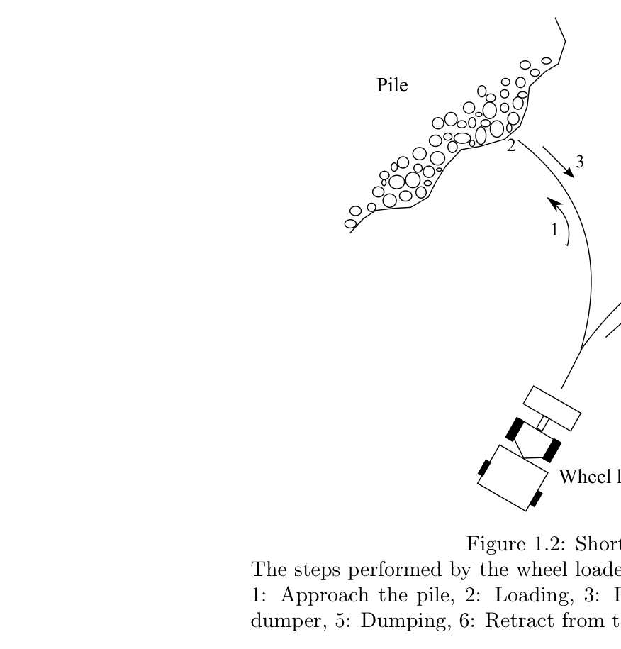
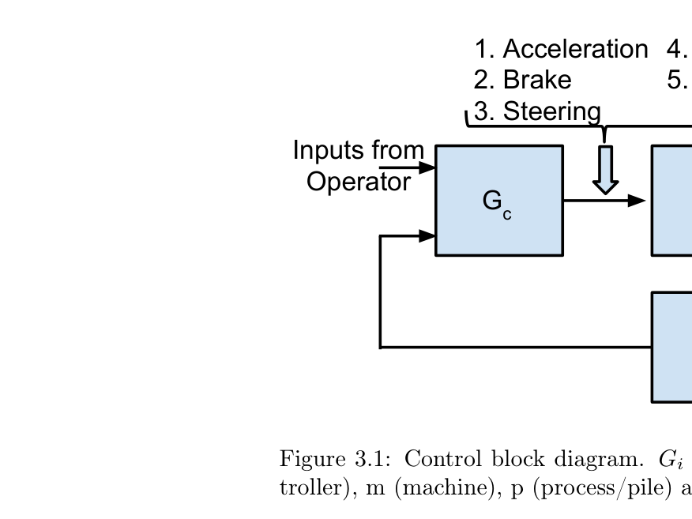
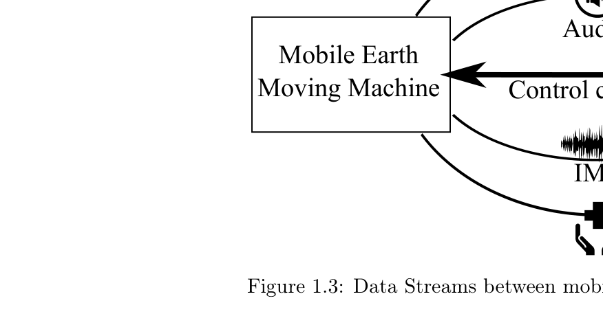
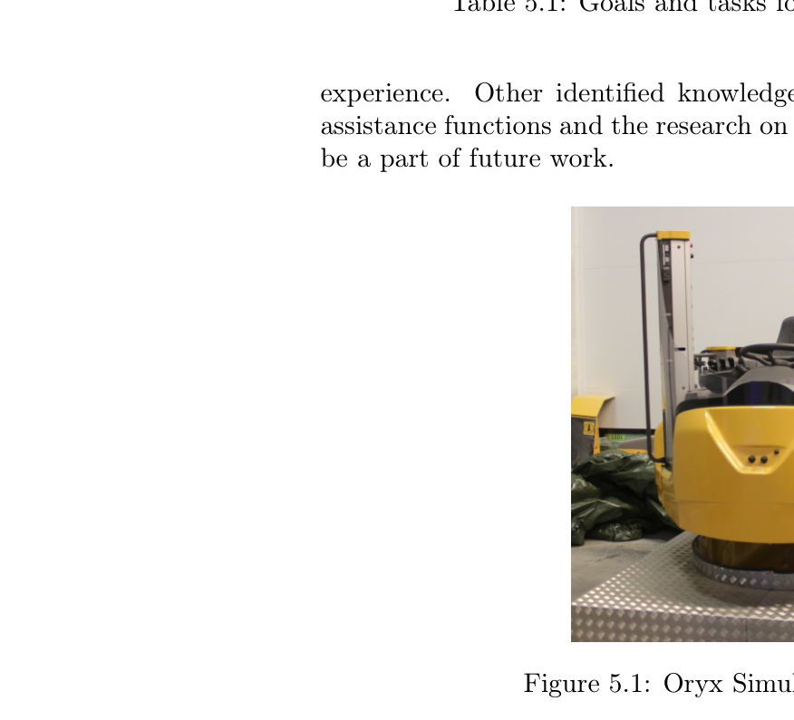
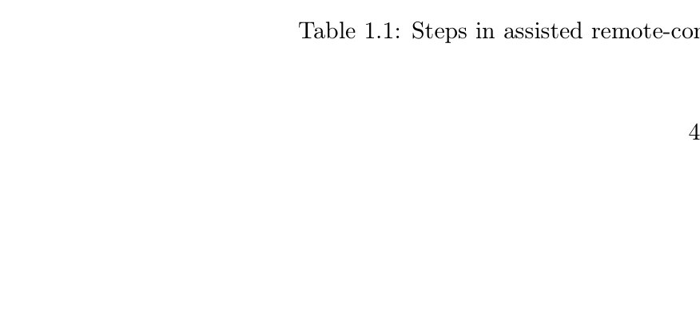
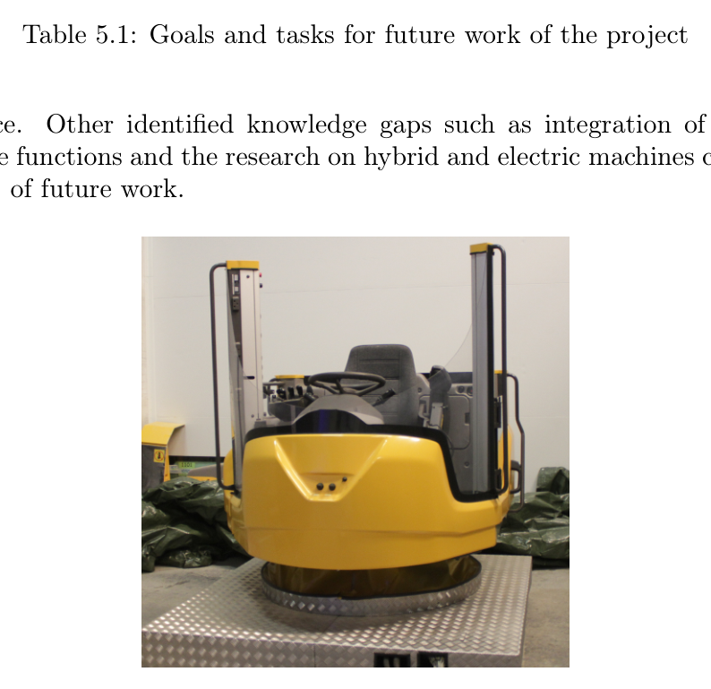

Luleå University of Technology2015#076서베이·산업동향연구보고서
토공 장비 자동화 서베이
A Survey in Automation of Earth-moving Machines
Siddharth Dadhich · Luleå University of Technology Research Report, ISBN 978-91-7583-317-0
한줄 요약 — 휠로더·LHD의 25~30초 단주기 적재를 접근-적재-후진-덤프트럭 접근-덤프-복귀로 분해하고, 안전·충전률·연료효율·주기시간 요구와 모델링·자동적재·인지·통신·HMI 연구를 연결하여 완전자율보다 원격운전에 보조기능을 단계적으로 얹는 연구경로를 제안한 2015년 WROOMM 기초보고서다.
1.연구 배경 및 동기
파쇄암 단주기 적재를 중심으로 자동화의 빈틈을 지도화하다
이 보고서는 토공 장비 전반을 다루지만 실제 문제의 중심을 지하광산 휠로더와 LHD의 파쇄암 단주기 적재에 둔다. 장비는 적재, 이동, 덤프를 수천 번 반복하며 가까운 덤프트럭이나 컨베이어를 상대로 V-Y 경로를 움직인다. 단일 주기가 짧기 때문에 작은 지연과 낮은 버킷 충전률도 누적 생산성에 큰 영향을 준다. 동시에 작업자는 발파 뒤 가스·분진, 충돌, 낙석과 같은 위험에 노출되므로 원격운전과 자동화의 안전가치가 크다.
그럼에도 30년가량의 연구가 상용 완전자율 적재기로 이어지지 못한 원인을 보고서는 버킷-재료 상호작용의 복잡성에서 찾는다. 눈·토양·자갈·목재칩·파쇄암은 밀도, 경도, 함수율, 조성이 다르고 한 번 퍼낸 뒤 더미 형상도 바뀐다. 장비 자체의 기구·유압모델은 상대적으로 만들기 쉽지만, 실시간 제어에 쓸 정확한 pile model과 저항력 모델은 확보하기 어렵다.
보고서는 완전자율을 단번에 목표로 삼지 않고 수동, 현장 가시권 원격, 원거리 원격, 보조 원격, 완전자율의 5단계로 전환경로를 정리한다. 현재 산업수요에는 검증된 원격운전 위에 충돌회피·경로계획·버킷 위치준비·자동적재·덤프 같은 보조기능을 점진적으로 추가하는 접근이 더 현실적이라고 본다. 이 관점은 기계 알고리즘만이 아니라 통신과 운전자 경험을 자율화 시스템의 일부로 포함시킨다.

원문 Figure 1.1 · PDF p.7 — Figure 1.1: Two common mobile earth-moving machines (Source: Volvo CE)

원문 Figure 1.2 · PDF p.10 — Figure 1.2: Short Loading Cycle The steps performed by the wheel loader in one operation cycle are as follows: 1: Approach the pile, 2: Loading, 3: Retract from the pile 4: Approach the dumper, 5: Dumping, 6: Retract from the dumper
선행 연구의 한계
선행연구가 기구모델, 버킷제어, 이동로봇 항법, 원격운전 등으로 분산되어 전체 단주기 적재의 병목이 한눈에 정리되지 않았다.
토양용 궤적·제어 결과를 비균질 파쇄암에 그대로 적용하기 어렵고 실제 파쇄암 전규모 시험이 드물었다.
원격운전 연구에서 영상 외의 청각·진동 피드백과 네트워크 지연·손실을 함께 평가한 사례가 부족했다.
자동적재 연구는 충전률만 높이거나 엔진출력을 크게 쓰는 식으로 연료효율·타이어 마모·주기시간의 상충을 충분히 다루지 않았다.
개별 보조기능이 각각 개발되어 운전자와 다른 보조기능 사이의 권한·상호작용 규칙이 불명확했다.
보고서는 체계적 문헌고찰의 검색식이나 PRISMA 흐름을 제시하지 않고 WROOMM 프로젝트의 문제정의에 필요한 대표 선행연구와 산업사례를 기술영역별로 분류한다. 먼저 휠로더 단주기 적재를 더미 접근, 적재, 더미에서 후진, 덤프트럭 접근, 덤프, 덤프트럭에서 후진의 6단계로 나누고 각 단계의 센싱·항법·제어 요구를 적는다.
그 다음 안전과 성능을 시스템 요구사항으로 설정하고, 관련 문헌을 기계·버킷 상호작용 모델링, 자동적재, 전규모 실험, 머신비전, 통신, 위치추정·항법, 경로계획, 동력계·traction, HMI, 작업계획, 환경시뮬레이션으로 분류한다. 성숙한 영역과 증거가 부족한 영역을 대비해 지식공백을 찾고, 이를 WROOMM 후속 실험의 연구질문과 장비·통신·원격조작 개발 순서로 바꾼다.
처리 파이프라인
1
대상 작업 고정
지하광산에서 휠로더 또는 LHD가 파쇄암을 가까운 운반차량으로 옮기는 단주기 적재를 대표 unit operation으로 정한다.
2
자동화 단계와 작업단계 교차분해
수동에서 완전자율까지 5단계와 한 작업주기의 6절차를 교차해 자동화가 필요한 위치와 운전자 개입지점을 식별한다.
3
요구사항 정의
사람·장비 안전, wheel slip, 충돌·도랑·보안과 함께 충전률, 연료효율, 주기시간을 핵심 요구로 묶는다.
충전률 하나가 아니라 운반량·연료·주기시간을 함께 보려는 보고서의 통합 성능지표다. 실제 온라인 검증값은 보고하지 않는다.

원문 Figure 3.1 · PDF p.18 — Figure 3.1: Control block diagram. Gi is the transfer function for i = c (con- troller), m (machine), p (process/pile) and s (sensors)
3.핵심 기술
6단계 단주기 적재와 보조기능 배치
더미 접근에서는 적재위치 선택과 안전항법, 적재에서는 센서기반 버킷제어와 spill 방지, 더미 후진에서는 덤프트럭 위치와 안전 후진점을 찾아야 한다. 덤프트럭 접근·덤프·복귀에도 정렬, 붐 준비, 장애물 회피가 필요하다. 이 분해는 자동적재 제어만 잘해도 전체 작업이 자율화된다는 오해를 막는다.
보조 원격운전은 모든 기능을 한꺼번에 자동화하지 않고 운전자가 고수준 판단을 유지한 채 반복적·위험한 하위작업을 기계가 맡는 형태다. 보고서는 이를 산업이 완전자율로 경험을 축적하는 중간 단계로 본다.
접근·적재·후진·운반차 접근·덤프·복귀의 6단계
경로계획, 충돌회피, 붐·버킷 준비, 자동적재·덤프 기능 배치
운전자 감독과 자동기능 사이의 권한 경계가 설계대상
짧은 반복주기에서 개별 단계의 작은 개선도 누적 생산성에 영향
자동적재 제어전략의 조건부 비교
위치제어는 낮은 밀도의 모래나 목재칩에서는 근사궤적을 따를 수 있지만 파쇄암의 큰 저항력에서는 actuator saturation과 wheel slip을 일으킨다. 순응제어는 압력·힘에 따라 궤적을 바꾸어 이 문제를 완화하며, 전향제어는 pile dynamics를 외란으로 보고 반복성분을 학습하거나 강인제어로 보상한다.
퍼지논리와 신경망 기반 AI는 정밀 토양모델 대신 숙련자의 행동을 규칙과 데이터로 옮긴다. 보고서는 어느 한 접근을 승자로 선언하지 않고, 파쇄암 전규모 시험이 부족하므로 AI와 순응제어 중 무엇이 더 적합한지를 연구질문으로 남긴다.
궤적제어는 고밀도 파쇄암에서 포화·슬립 위험
순응제어는 저항력에 따라 버킷 경로를 실시간 수정
전향제어는 반복 외란을 사전 보상하지만 예측오차가 남음
AI 제어는 작업자 지식을 부호화하나 데이터·규칙 일반화 검증 필요
안전과 생산성을 동시에 보는 시스템 지표
안전에는 사람 충돌뿐 아니라 wheel slip, 벽·암석·다른 차량 충돌, 도랑 진입, 사이버공격이 포함된다. 레이저·레이더·RFID가 후보 센서지만 분진과 안개에서 성능저하가 가능하다. wheel slip은 타이어 손상과 유지비에 연결되므로 자동적재와 traction control이 분리될 수 없다.
성능은 버킷 충전률, 연료효율, 주기시간의 상충으로 정의된다. 빠른 주기는 가감속 연료를 늘릴 수 있고, full engine power는 적재량을 높여도 연료와 마모를 악화시킨다. SLCPI는 이 다목적 문제를 장기 평균으로 평가하려는 개념이다.
사람 안전을 최우선으로 하고 장비 손상·생산중단 비용도 포함
충전률은 cylinder pressure 기반 weighing system으로 측정 가능
주기시간과 연료효율 사이 trade-off 명시
단일 목적 대신 SLCPI 최대화를 보조기능 목표로 제안
원격운전을 제어·통신·HMI의 공동문제로 정의
현장 운전자는 3D 시각, 소리, 진동과 균형감각을 이용하지만 원격 운전자는 평면 영상만으로 판단하는 경우가 많다. 보고서는 video, audio, IMU vibration, monitoring data의 네 하향 스트림과 제어명령 상향 스트림을 구분한다.
무선 다중경로, 신호세기 변화, 간섭, 지연과 패킷손실은 제어성능을 직접 악화시킨다. 따라서 단순히 고대역폭 링크를 쓰는 것뿐 아니라 운전자에게 어떤 감각을 어떤 지연과 우선순위로 전달할지, 보조기능이 지연구간에서 무엇을 자율 처리할지를 함께 평가해야 한다.
영상·음향·진동·장비상태의 다중감각 피드백
TCP의 head-of-line delay와 UDP의 혼잡제어 부재를 문제로 식별
SCTP·DCCP·QUIC 후보를 후속 실험 대상으로 제안
보조기능 통합과 통신저하 시 degraded mode가 핵심 시스템 과제

원문 Figure 1.3 · PDF p.12 — Figure 1.3: Data Streams between mobile machine and remote control station
4.실험 결과
실험 환경·장비·데이터
독립적인 새 장비 실험을 보고한 연구가 아니라 WROOMM 프로젝트 착수 단계의 문헌조사·요구분석 보고서다.
후속 연구자산으로 Volvo CE가 제공한 20~22톤 휠로더와 Oryx 원격조작 스테이션을 제시한다.
실험 프로토콜
단주기 적재의 절차별 요구와 선행 자동화기능을 연결한다.
안전과 성능 요구를 정의한 뒤 각 기술영역의 성숙도와 현장증거를 비교한다.
토양과 파쇄암, 굴착기와 휠로더, 수동과 원격·보조 원격운전의 증거차이를 구분한다.
증거가 부족한 영역을 지식공백으로 정리하고 6개 연구질문으로 변환한다.
향후에는 장비 계측, 숙련자 파쇄암 시험, 전송프로토콜, 멀티미디어, 자동적재 순으로 독립 실험을 수행하도록 제안한다.
비교 기준
수동·현장 원격·원거리 원격·보조 원격·완전자율의 자동화 수준
위치·순응·전향·AI 기반 자동적재 제어
토양·모래·자갈과 비균질 파쇄암 실험
영상 단독과 영상·음향·진동·상태정보를 포함한 원격 HMI
TCP·UDP와 SCTP·DCCP·QUIC 후보 전송방식
평가 지표
버킷 충전률
연료효율
작업주기 시간
SLCPI
통신 지연·손실·처리량
원격운전자 경험과 수동운전 대비 생산성

원문 Figure 5.1 · PDF p.27 — Figure 5.1: Oryx Simulator for Volvo L110G
핵심 결과 해석
검토 결과, 굴착기 기구동역학·레이저 항법·기하 경로계획은 비교적 연구가 축적된 반면 비균질 파쇄암 자동적재, 원격운전 통신, 운전자 감각·성능, 여러 보조기능의 통합은 증거가 부족했다. 특히 자동적재 논문 다수가 토양이나 소규모 장치에 머물고, 실제 파쇄암을 대상으로 한 전규모 시험은 매우 적었다. 따라서 토양에서 좋은 위치추종이나 퍼지제어 성과를 광산 LHD에 일반화할 수 없다고 판단한다.
보고서는 완전자율 시스템이 인간보다 높은 성능을 보이기에는 아직 멀다고 결론내고, 현재 산업목표를 위험현장에서 운전자를 분리하면서 생산성을 높이는 보조 원격운전으로 설정한다. 원격제어 기반을 먼저 안정화하고 보조기능을 하나씩 추가하면 각 기능의 효과와 운전자-자동화 경계를 실험할 수 있다는 논리다.
이 자료의 결과는 자체 실험 성능치가 아니라 연구지형과 실행계획이다. 파쇄암 등급별 적응 적재, 안전하고 효율적인 전송프로토콜, 대체 감각피드백, AI와 순응제어 비교, on-board 보조기능의 권한경계, 개별 휠 구동을 이용한 slip 방지라는 여섯 질문을 후속 검증과제로 남긴다.
정량 결과
실패 사례와 경계조건
파쇄암 자동적재에 관한 전규모 직접시험이 부족해 제어전략의 우열을 정량적으로 결론낼 수 없다.
평면 영상만 제공하는 원격조작은 현장 운전자의 깊이·음향·진동 단서를 재현하지 못해 성능이 낮아질 수 있다.
무선 링크의 다중경로·간섭·지연·손실은 제어경험을 악화시키지만 보고서 자체의 네트워크 실험자료는 없다.
레이저와 레이더는 지하광산의 분진·안개에서 성능이 저하될 수 있다.
여러 보조기능이 동시에 작동할 때 명령이 겹치거나 상쇄될 수 있지만 통합 규칙이 제시되지 않았다.
5.한계 및 향후 연구
현재 한계
검색 데이터베이스·검색식·선정기준과 문헌 품질평가 절차가 없어 체계적 리뷰로서 재현성이 제한된다.
2015년까지의 문헌에 한정되어 이후 deep RL, 대규모 시뮬레이션, 현대 LiDAR-SLAM과 통합 자율굴착 연구를 포함하지 않는다.
우리의 자율굴착 연구가 버킷 궤적이나 힘제어 성능만 제시하면 실제 단주기 생산시스템의 일부만 검증한 셈이다. 이 보고서의 6단계 분해를 이용하면 더미 접근, 적재, 후진, 덤프트럭 정렬, 덤프, 복귀 각각에 성공조건과 fallback을 배치하고, 전체 cycle time과 적재량·연료를 상위 지표로 연결할 수 있다.
특히 통신과 HMI를 별도 부가기능이 아니라 제어루프의 일부로 취급한 점이 중요하다. 원격감독형 자율굴착에서는 지연이 커질 때 기계가 안전정지할지 로컬 보조기능으로 계속할지 정의하고, 운전자에게 영상·음향·힘·불확실성 중 무엇을 우선 전송할지 실험해야 한다.
단주기 6단계를 상태기계와 작업별 KPI로 구현
SLCPI를 적재량·연료·시간의 상위 최적화 지표로 재정의
파쇄암 크기분포와 압력·slip을 조건으로 하는 적응형 적재정책 구축
네트워크 지연·손실 주입시험을 원격·shared autonomy 평가에 포함
운전자 개입·자동기능 전환을 기록해 HRI 안전성과 workload를 정량화
7.전체 그림·표
본문 핵심 위치에 배치하지 않은 원문 Figure와 Table을 원문 페이지 순서로 수록한다.

원문 Table 1.1 · PDF p.10 — Table 1.1: Steps in assisted remote-control operation for short loading cycle

원문 Table 5.1 · PDF p.27 — Table 5.1: Goals and tasks for future work of the project